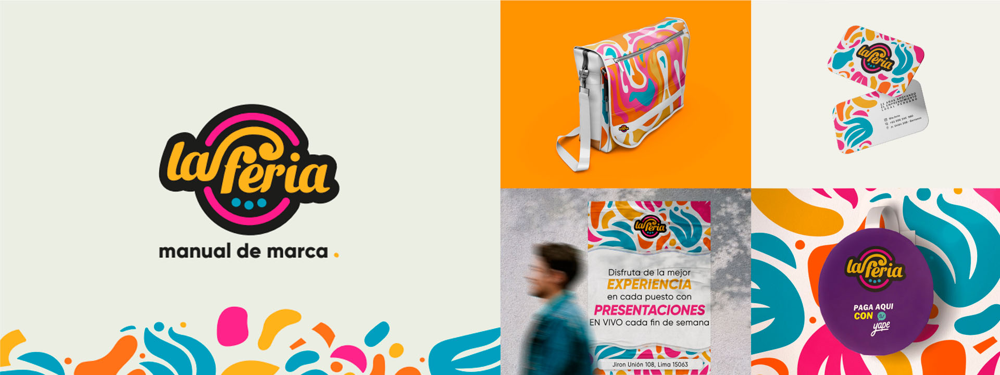
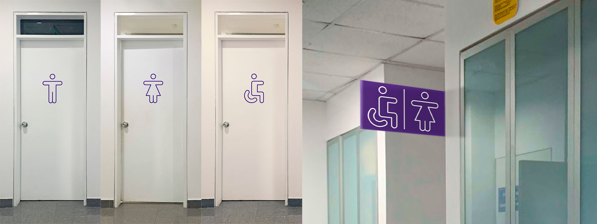
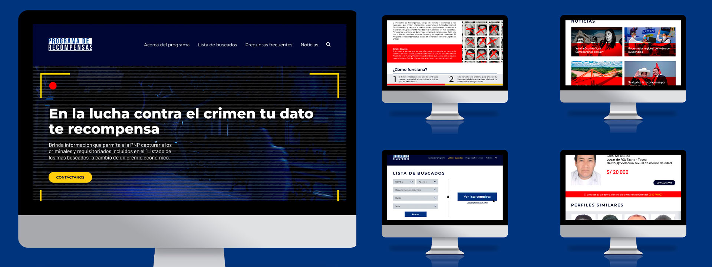

Mi portafolio de proyectos
Este es mi portafolio de Dirección y Diseño Gráfico de manera resumida y dejaré mi perfil de Behance al final de la página.
Rebranding: La feria
La feria de Barranco es una feria que le da un espacio a emprendimientos peruanos para que puedan ser expuestos. En el rebranding se actualizó el logo con una cara más divertida y dinámica que se expresa a través de sus colores y motivos.
Señalética: Toulouse Lautrec
Se cambió la señalética de los baños debido al problema que era muy fácil confundir los baños de hombres y mujeres. Además, se agregó una bandera afuera de los baños del primer piso para que se puedan ubicar con facilidad.
Rediseño web: Programa de recompensas
Rediseño de la página del Programa de Recompensas del Ministerio del Interior para agilizar la navegación y experiencia de usuario, además de una nueva apariencia y apartados de información importante que eran omitidas.